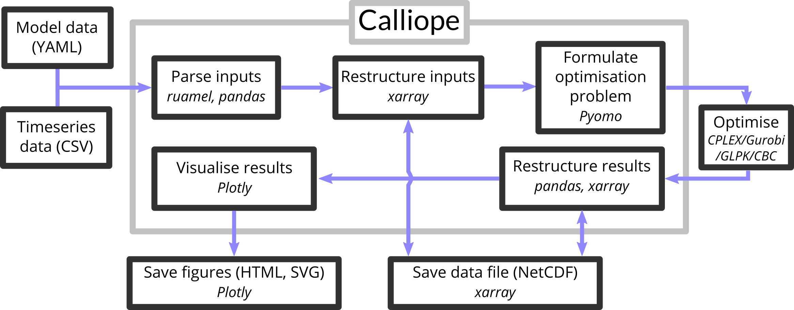

DAY 2
1. Calliopeの概要
1.1 Calliopeとは
Calliopeはチューリッヒ工科大により開発された、エネルギーシステムモデリングフレームワークである。モデルは、YAMLというファイル形式で記述される。セクターカップリングを前提に開発されたものではないが、柔軟に設定することができるので、セクターカップリング関係の研究にも用いることができる。ソルバーは外部依存で、GLPKやGurobi、CPLEXを使うことができる。公式ドキュメント(English)はこちら。
Calliopeを使用したモデリングの基本的なプロセスは、3つのステップに基づく。
-
ゼロから、または既存のモデルを調整してモデルを作成する（モデルの構築）
-
モデルを実行する（モデルを実行する）
-
モデル結果の分析と視覚化（モデルの分析）
 天野のゼミ資料
天野のゼミ資料
1.2 用語
ここで定義されている用語は、ドキュメント、モデルコード、および構成ファイル全体で使用される。
Technology- エネルギーを生産、消費、変換、または輸送するテクノロジー
Place- 複数の技術を含めることができ、エネルギー・バランシングのために他の場所を含めることができる場所
Resource- 技術を用いてシステムにエネルギーを導入したり、システムからエネルギーを取り出したりするためのエネルギーのソース（または貯蔵施設）
Career- エネルギー担体、例えば、electricity（電気）、またはheat（熱）。
制約付き最適化ではより一般的に、次の用語も使用される。
Parameter- モデル方程式に入力される定数
Variable- モデル方程式に入る変数係数（決定変数）
Set- 方程式の代数的定式化におけるインデックス
Constraint- 1つまたは複数の変数を制約する等式または不等式
1.3 Calliopeの特徴
- 解析する期間をいくつかに分割して表現（次節で解説）。
- 資源の採掘から最終消費までの各エネルギープロセスをノードとして表現。
- ノードのネットワーク（ノード間を互いにパスでつないだもの）によってエネルギーシステムを表現。
1.4 Calliopeの内部処理
Calliopeの内部処理について紹介する。Calliopeは以下の図のようなフローで処理している。

Calliopeとはそもそも、入力されたデータを線形ソルバーでの最適化のために準備し、結果を分析・保存するためのソフトウェアである。データ入力は、次の入門ゼミ資料で取り上げるが、YAMLとCSVという形式で行われる。入力されたデータはruamel、pandas、xarrayといったライブラリで処理された後、Pyomoに渡される。Pyomoは最適化モデルを生成する、ソフトウェアパッケージであり、GAMSのようなシステムである。Pyomoは、処理したデータを最適化ソルバーが読める形式に変換し、外部の最適化ソルバー（Gurobi、CPELX、GLPKなど）に流す。最適化ソルバーから帰ってきた処理結果は再びpandasとxarrayによって処理されて出力される。また、Plotlyを使って可視化も行うことができる。
2. Calliope のチュートリアル
2.1 YAMLの書き方
Calliopeの設定ファイルは、YAML（ヤムル）という形式で書かれている。この形式は、コンピュータにも人間にも読みやすいようにできており、XMLやJSONといった形式と似たような役割である。拡張子は.ymlか.yamlが用いられる。この入門資料では、Calliopeを回す際に知っておいたほうが良い部分のみ解説する。
リスト
リストはハイフン-で表現するか、{}で要素を囲う。例えば、
1 2 3 4 5 6 7 | |
のように記述する。
連想配列
連想配列とは、値に名前を付けて管理できる配列である。Pythonでは辞書形配列とも呼ばれる。連想配列は以下のように記述する。
1 2 | |
Calliopeの設定ファイルでは、入れ子構造にした連想配列（連想配列のなかに連想配列がある）がとてもよく用いられる。
1 2 3 4 5 6 7 | |
なお、YAMLではインデント（字下げ）にスペースのみを使い、スペース二個単位でインデントすることが多い。コメントアウトは#を使う。
2.2 実行ファイルの構造
Note
詳しくは公式ドキュメントを参照されたい
Calliopeの実行ファイルは、おおむね以下のような構造になっている。
1 2 3 4 5 6 7 8 9 | |
Calliope実行時に呼び出す設定ファイルはmodel.ymlであり、このmodel.ymlファイルに他のYAMLドキュメントを呼び出す記載をしていく。
2.3 公式チュートリアルを動かしてみる
とりあえず、手元のコンピュータでチュートリアルファイルを動かしてみよう。まずは実行ファイルを置く場所を適当に作って移動する。例えば、
1 2 | |
のようにする。別に場所はどこでも構わない。
次に、Calliopeのチュートリアルをコピーする。calliope newコマンドを使うと自動でコピーすることができる。
1 2 3 4 5 6 | |
以上の一連のコマンドを入力すると、tutorialフォルダにサンプルコードが自動でコピーされ、VSCodeで開かれたと思う。デフォルトの設定ではソルバーにcbcが指定されているので、前回インストールしたgurobi又はCPLEXに設定しなおす必要がある。ソルバーの設定はmodel.ymlに記載があるので開いて編集する。

おそらく、開くとこのようになっていると思う。ソルバーは20行目あたりに記載があるので、
1 | |
と書き換える。書き換えたら上書き保存しておく。
モデルの実行にもコマンドを使う。実行するときはVSCode内でターミナル（PowerShell）を開くと見やすいのでおすすめ。Ctrl+Shift+` (環境によっては Ctrl+Shift + @ )を押すとVSCode内にターミナルを開くことができる。上部のツールバーからでも開ける。
とりあえず実行だけしてみる。ターミナルに次のコマンドを入力する。
1 2 3 4 5 | |
実行すると、なにやら文字が流れる。最終行にCalliope run complete.とあればきちんと計算が回っている。何かエラーメッセージがでた場合は相談してほしい。以上でcalliopeのチュートリアルモデルを実行することはできたが、実は結果が保存されていない。実行コマンドにオプションをつけることで結果の保存形式を指定することができる。例えば、csvファイルで保存したいときは、--save_csv={directory name}を、グラフをhtmlで保存したいときは--save_plots={filename.html}と実行コマンドの後に続けて書く。例えば以下のようにすると、outputsフォルダに結果のcsvが、model.yamlと同じ階層にoutput_plot.htmlが保存される。
1 | |